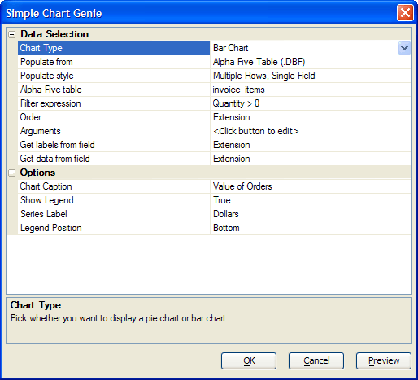
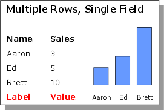
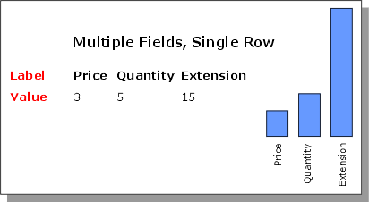

SimpleChart Style Xdialog
The SimpleChart style Xdialog displays numeric data in the form of a bar, pie, or line chart.
To create a list view style Xdialog.
Create a new Action Script.
Select "Xdialog Windows" in the Category list.
Select "Display an XDialog Box" in the Action list.
Click OK to display the Script Genie.
Enter the name of new variable in the Variable Name field.
Optionally, change the value of the Prompt field.
Optionally, change the selection in the data Type list.
Select "SimpleChart Control" in the Style list.
Set the Width and Height of the resulting dialog box.
Click Define SimpleChart Control to display the SimpleChart Genie.
Continue with Data_Selection.

Make a selection in the Data Selection > Chart Type list. The options are:
"Bar Chart"
"Line Chart"
"Pie Chart"
Make a selection in the Data Selection > Populate from list. The options are:
"Static list"
"Alpha Anywhere Table (.DBF)"
If you chose "Static list" in step 2:
Click
 in the Data Selection > Static data
field to display the Static List dialog.
in the Data Selection > Static data
field to display the Static List dialog.Optionally, redefine the Column delimiter character.
Enter the data to be displayed in the chart, one entry per line. The data should be formatted . The
must be numeric. Press OK to continue.
If you chose "Alpha Five Table (.DBF)" in step 2:
-
Make a selection in the Data Selection > Populate style list. The options are:
"Multiple Rows, Single Field" - labels come from the data
"Multiple Fields, Single Row" - labels comes from the field names

This picture illustrates how 2 fields from multiple records are used for multiple rows, single field

This picture illustrates how 1 record is used for multiple fields, single row
Make a table selection in the Data Selection > Alpha Anywhere table list.
If you selected "Multiple Fields, Single Row" in step 4, click
in Data Selection > Fields to
select the fields to display in the
Select Fields dialog.Optionally, click
in the Data Selection > Argument
field to display the
Define Arguments dialog. This allows you to prompt the user for values
or read values from variables. You can use these values (arguments) in
the Data Selection > Filter expression field.Optionally, enter an expression that limits the records to display in the Data Selection > Filter expression field. Optionally, click
to use the Expression Builder to
help you define an expression that evaluates to a logical value.Optionally, enter an expression that orders the records to display in the Data Selection > Order field. Optionally, click
to
use the Order Builder to help you define an
expression that incorporates at least one field name.If you selected "Multiple Rows, Single Field" in step 4, click
in Data Selection > Get labels from
field to select a table field.If you selected "Multiple Rows, Single Field" in step 4, click
in Data Selection > Get data from field
to select a table field. This must be a numeric field.
In the Options > Chart Caption field enter the title that will appear at the top of the chart.
In the Options > Show Legend field select whether you want to show the data legend.
If you selected "Bar Chart" or "Line Chart" in step 1, in the Options > Series Label field enter the description of the values shown on the vertical axis.
In the Options > Legend Position list select the position of the legend. The options are:
"Top"
"Bottom"
"Left"
"Right"
Optionally, click Preview to see how the chart will appear.
Click OK to continue.
Finish the Dialog Definition
Click Next >.
Optionally, enter the title of the dialog box in the Dialog Title field.
Optionally, enter text to appear at the top of the dialog box into the Header Text field.
Optionally, enter text to appear at the bottom of the dialog box into the Footer Text field.
Optionally, modify the bottom labels in the Button Text fields.
Click Next >.
Optionally, modify the name of the variable in the Variable Name field that will capture the return value of the Xdialog box.
Optionally, change the Scope of the return variable to one the following values. A variable's scope refers to where the variable can be seen, i.e. which other scripts can access the variable.
"Shared". Variables are available throughout the current form.
"Global". Variables are available anywhere in Alpha Anywhere.
"Local". Variables are available only in the current script.
Click Next >.
Optionally, modify the comment that describes the action.
Click Finish.
See Also
Display an Xdialog Box, Creating Charts with SimpleChart, Placing SimpleCharts on a Web Page